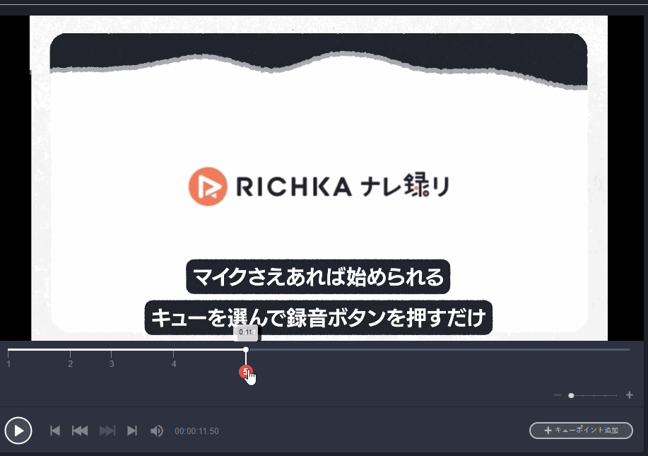

Markers of Video Player on Recording Service
Introduction
In Recording project, we use videojs https://videojs.com/ and its 3rd party plugin markers https://github.com/spchuang/videojs-markers to play the video as well as marking the positions of narration texts in which we will play custom audios which are automatically generated with speech synthesis technologies or manually recorded by users.
The goal of this post is to focus on videojs's markers plugin, how to use it and its common use cases.
Initialization
let markers = [
{time: 9.5, text: "this"},
{time: 16, text: "is"},
{time: 23.6,text: "so"},
{time: 28, text: "cool"}
];
video.markers({
markers: markers
});
In above example, video is an instance of videojs object, 2 compulsory fields are time and text but you can add any additional info which you want to query later. In Recording project, we store one additional data named is_recorded to mark whether the marker already be recorded audio file for it.
Common Cases
Customize Marker Style
We can style differently between normal marker and selected marker. Each marker has style class vjs-marker and the current marker has additional style class vjs-marker-current. Based on them we can style anything we want or even add additional html code to each marker as the above screenshot.
<div data-marker-key="63e42a41-620d-44b3-b0ee-ff5617ac051d" data-marker-time="1.368872" class="vjs-marker ui-draggable ui-draggable-handle vjs-marker-current">
<div class="cue-line">
2
</div>
</div>
Draggable & Update Marker's Position
We can support markers to be draggable by using draggable JS library
$(".vjs-marker").draggable({
start: function(event, ui) {
//Handler when marker start moving
},
drag: function(event, ui) {
//Handler when marker is on move
},
stop: function(event, ui) {
//Hander when marker is stopped moving
}
});
Normally we can use start and drag functions to handle animation when marker is on moved, and when marker is stopped moving, stop function is triggered, and we will update markers info to database and update markers of the video with new positions.
player.markers.removeAll();
$('#video_video .vjs-marker').remove();
player.markers.add(markers);

Marker's Most Common Events
onMarkerReached
The event will be fired when the current position of the videojs player reaches a marker position. Please be noticed that there can be a time difference and the event is not raised precisely at marker's position time. The different can be up to 0.01 second.
onMarkerClick
The event is fired when a videojs marker is clicked and you can get the data of the clicked marker through the function argument.